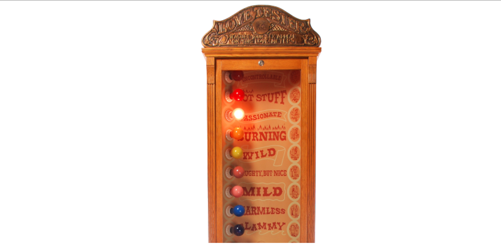

Hypothesis Testing
UC Berkeley, MIDS w203
UC Berkeley, School of Information
Introducing the Two-Sample t-Test
Motivating the Two-Sample t-Test
Examples:
- Are customers who get a birthday gift less likely to leave than those who don’t?
- Do patients who take Vitamin W get over the flu faster than patients who don’t?
- Do democracies or autocracies start more wars?
Example Scenario
Is this evidence that San Franciscans have more black outfits than New Yorkers in expectation ?
Two-Sample Model Framework
Comparing Population Means

Comparing Population Means
The Two-Sample z-Test
Two-Sample -Test
Let \(X_1,...,X_{50}\) rep. New Yorkers. Assume iid, mean \(\mu_X\) .
Let \(Y_1,...,Y_{50}\) rep. San Franciscans. Assume iid, mean \(\mu_Y\) .
Assume \(\sigma_X = \sigma_Y = 2.\)
General Procedure for Testing
Three steps:
- Specify model, null hypothesis, rejection criterion
- Calculate statistic
- Plot statistic on the null distribution to get the \(p\) value.
The Two-Sample t-Test
Types of Two-Sample t-Tests
- Student’s t-Test
- Welch’s t-Test
The Two-Sample z-Test
\(z = \frac{\overline{X} - \overline{Y}}{ \sqrt{\frac{\sigma_X^2}{n_X}+\frac{\sigma_Y^2}{n_Y}}}\) - Problem : we don’t know \(\sigma_X\) or \(\sigma_Y\)
Student’s t-Test
- Estimate a single “pooled” standard deviation, \(s\) .
- Substitute \(s\) for both \(s_X\) and \(s_Y\) . \(t = \frac{\overline{X} - \overline{Y}}{\sqrt{\frac{s^2}{n_X}+\frac{s^2}{n_Y}}}\)
- One sample t-test - Model has one parameter (the mean)
- Given the sample mean, and \(n-1\) observations, can compute the last one.
- df = \(n - 1\)
- Student’s two-sample t-test - Model has two parameters ( \(\mu_X\) and \(\mu_Y\) )
- Given the sample means, \(n_X -1\) observations for \(X\) and \(n_Y - 1\) observations for Y, can compute the rest
- df = \(n_{X} + n_{Y} -2\)
Student’s t-Test Summary
- Tests if mean of \(X\) equals mean of \(Y\) .
- Uses a pooled estimate for standard deviation.
- Major disadvantage: Only valid if \(\sigma_X = \sigma_Y\) .
Welch’s t-Test
- Compute two sample standard deviations: \(s_X\) and \(s_Y\) .
- Substitute \(s_X\) for \(\sigma_X\) and \(s_Y\) for \(\sigma_Y\) .
Choosing a Two-Sample t-Test
Some authors recommend a two step process:
- Use Levine’s test for equal variances ( \(H_0: \sigma_X = \sigma_Y\) )
- If non-significant, proceed with Student’s t-Test
Our advice: always use Welch’s t-Test
- Power is almost as high as for Student’s test
- We never know for sure if variances are equal
- This is the default in most statistical software
Welch’s Two-Sample t-Test Assumptions
- Metric Scale: \(X_1, X_2,..X_{n_X}\) and \(Y_1, Y_2,...,Y_{n_Y}\) are random variables measured on a metric scale.
- Independence: \(X\) ’s are iid, \(Y\) ’s are iid, and \(X\) ’s and \(Y\) ’s are mutually independent.
- Normality: The distribution of the \(X\) ’s is normal and the distribution of the \(Y\) ’s is normal - The CLT guarantees normality for large samples
- Main concern is strong skewness with a small sample
Practical Significance of the T-Test
Practical Significance for the T-Test
After using a t-test to assess statistical significance, it is important to assess practical significance.
Three common effect size measures: 1. Difference in means 2. Cohen’s d 3. Correlation r
Difference in Means
Difference in means
[ {A} - {B} ]
- Answers the question `` How different are these groups?’’
- Often makes great headlines and is a good choice if units are familiar
- But lacks context in its calculation
- People who eat chocolate live 1.5 years longer than those who do not each chocolate
Cohen’s d
Cohen’s d
Cohen’s d is a measure of difference of means standardized by the variance in the data. [ ] Where \(s\) is a pooled standard deviation: \(\sqrt \frac{(n_1-1)s_1^2 + (n_2-1)s_2^2}{n_1+n_2}\)
- Answers the question `` How many standard deviations apart are the groups? ’’
- The difference in sarcasm score between frequentists and Bayesians is \(d = 0.54\) standard deviations.
Correlation
Biserial Correlation
Correlation answers the question ``How strong is the relationship between group identity and the outcome?’’ [ = ]
Correlation
Biserial Correlation
Correlation answers the question ``How strong is the relationship between group identity and the outcome?’’ [ = ]
Correlation
Biserial Correlation
Correlation answers the question ``How strong is the relationship between group identity and the outcome?’’ [ = ]
Practical Significance is about Context
- How strong is the same relationship between different groups?
- How strong is a different relationship between the same group?
- What is the underlying dispersion in the data?
- What is a meaningful anchor or reference point that you can use for context?
The Paired t-Test
Paired t-Test
Paired t-test
Paired t-Test
- Idea: For any particular subject \(i\) , the difference between right-hand strength and left-hand stregth, \(R_i - L_i\) , will usually be small.
- Within-person variation is small.

Paired t-Test
Paired t-Test
Paired t-Test
Paired t-test
A _paired t-test_, sometimes called a _dependent
t-test_, builds an explicit dependency between data.
Instead, perform a one-sample t-test with $H_0: \E[ R_{i}- L_{i}] = 0$.- This dependency must actually exist
- Cannot simply change the test
Unpaired vs. Paired t-Test
Unpaired- \(t = \frac{\overline{A} - \overline{B}}{\sigma_{A\&B}}\)
Paired- \(t = \frac{\overline{A} - \overline{B}}{\sigma_{(A - B)}}\)
Paired t-Test Assumptions
- \(A\) and \(B\) have a metric scale with the same units.
- There is a natural pairing between observations for \(A\) and for \(B\) . - pre-test and post-test for same individual
- response to two types of stimulus for same mouse
- responses for a pair of spouses
- Each pair \((A_i, B_i)\) is drawn i.i.d.
- The distribution of \(A-B\) is sufficiently normal given the sample size.
Introduction to Non-parametric Tests
Non-parametric Tests
- \(t\) -test is parametric, like all the tests we’ve seen so far - Assumes the population comes from a parametric family of distributions
- Typically the normal curves
- It is not always possible to meet this assumption
Non-parametric Tests (cont.)
Large sample - No Problem - central limit theorem tells us that the sampling distribution of the mean will be approximately normal, so \(t\) -tests are valid - Parametric tests are generally valid for large samples
Non-parametric Tests (cont.)
Small sample - \(t\) -test is fairly robust to deviations from normality, but you should look at your distribution and see how non-normal it is - Suppose you have a small sample and you suspect you have a major deviation from normality - You might be able to transform the variable to make it more normal, but that can alter the meaning and make results harder to interpret
Non-parametric Test Details
- Non-parametric tests can be also called distribution- free tests - Still involve assumptions, but they are less restrictive than those of parametric tests
- Many tests work on principle of ranking data - List the scores from lowest to highest – each score gets a rank, so higher scores have higher ranks
- Only consider ranks instead of looking at the metric value of the variable
- Use the order of variables to construct statistics that we can use to test hypotheses
Non-parametric Test Details (cont.)
Advantages- Population distribution doesn’t have to be normal - Easier to justify a rank-based test
Disadvantages- We throw out metric information - Rule of thumb: if you throw away information, you lose statistical pwoer
Rank-Based Tests for Ordinal Variables
- Rank-based tests are especially useful when we have an ordinal variable - eg. a Likert variable such as “how do you feel about a presidential campaign?”
- Neutral, support, strongly support, etc.
- It is hard to argue that the difference between neutral and support is the same as the difference between support and strongly support
Love Tester Example

Do you trust that the difference between harmless and mild is the same as the difference between burning and passionate?
Rank-Based Tests for Ordinal Variables (cont.)
If you run a \(t\) -test in these cases, you impose a linear structure on your variable, treating it as metric
- This method may or may not be reasonable
- If you use a rank-based test that is okay–you are asking whether one group tends to rank below or above another
- The ranks are still meaningful
Conclusion
- There are some situations in which you should consider non-parametric tests
- Coye is going to tell you more about the specifics
Wilcoxon Rank-sum Test for Independent Groups
Parametric and Non-parametric Tests for Comparing Only Two Groups
Comparing Two Independent Conditions: Wilcoxon Rank-Sum Test
- Data are ranked from lowest to highest across groups
- This provides potential rank scores
- If the same score occurs more than once then all scores of the same value receive the average of the potential ranks for those scores
- This gives us the final rank scores
Comparing Two Independent Conditions: Wilcoxon Rank-Sum Test
Calculating the Wilcoxon Rand-Sum Test
- After assigning final ranks, add up all the final ranks for each of the two groups
- Subtract the mean rank for a group of the same size as our groups - Otherwise, larger groups would always have larger values
- For example, the mean group for a group of four = 1 + 2 + 3 + 4 = 10
- Our final calculation in therefore: - \(W\) = sum of ranks - mean rank
Calculating the Wilcoxon Rank-Sum Test (cont.)
- Group A: W = sum of ranks (17.5) - mean rank (10) = 7.5
Interpretation of the Wilcoxon Rank-Sum Test
- You can also do a one-directional test if you hypothesize that one particular group will have higher ranks than the other
- Always two values for \(W\) (one for each group)
- Lowest score for \(W\) is typically used as the test statistic
Interpretation of the Wilcoxon Rank-Sum Test (cont.)
- For small sample sizes ( \(N<40\) ), R calculates the \(p\) value with the Monte Carlo methods - ie. simulated data are used to estimate the statistic
- For larger samples, R calculates the \(p\) value with a normal approximation method - Assumes that the sampling distribution of the \(W\) statistic is normal, not the data
- Normal approximation method helpful because it calculates a z statistic in the process of calculating the \(p\) value